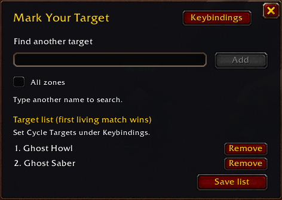
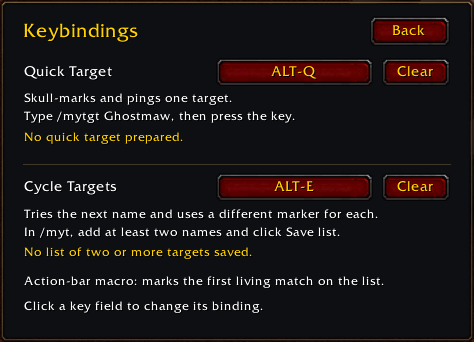
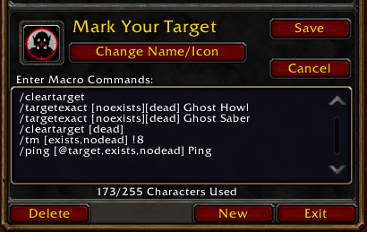
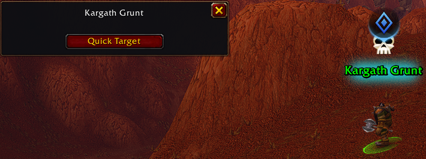
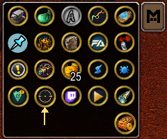
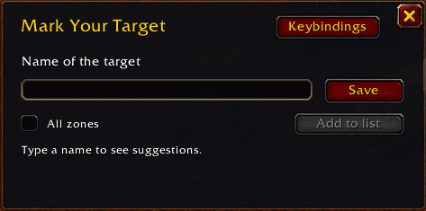
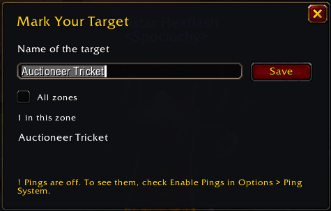

World of Warcraft: Forever add-on
Mark Your
Target
Keep one targeting macro on your bar. Use /myt to save a mob or build a list, then bind Cycle Targets to try and mark each name in turn.
In game















Install and use
- Extract the download into
_forever_/Interface/AddOns/and restart WoW. - Type
/mytor click the crosshair on the minimap or in MinimapButtonButton. - Choose an NPC, save out of combat, and drag the macro to your action bar.
- Add two or more names and click Save list. The action-bar macro tries the names in order. Open Keybindings in the picker and assign Cycle Targets to try one name per press.
- For a one-off target, type
/mytgt Ghostmawout of combat, then click Quick Target or press its key.